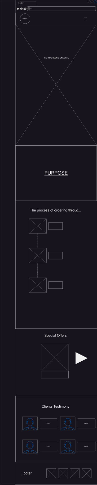
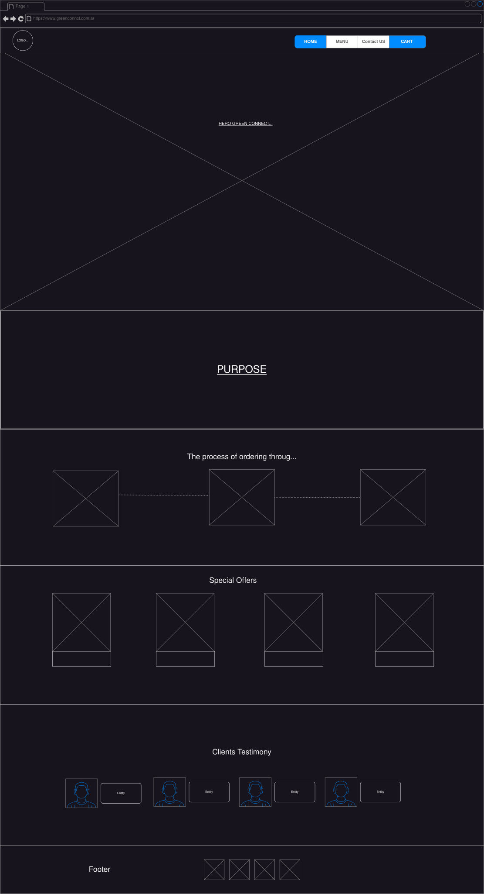

Purpose of project
The project name is Green Connect. I chose this name because the project will aim to connect people with special needs who do not have time to cook at home. Since they don't have time to cook at home, they always resort to junk food like hamburgers, pizzas, and hot dogs. But there are many suppliers and customers who want healthy food at affordable prices. The idea is to connect these people with suppliers who sell salads, specially prepared and personalized meals for each customer. I share this from personal experience, as I need to eat healthy, I don't have much time, and I need quick and healthy solutions, just like me and many other people.
Scenarios
This website solve the next user questions
- Where can I get fast and healthy food that arrives at my work at this time?
- What healthy alternative can I order online?
- Where can I find someone to cook for me because of my health problem?
- Where can I find food according to the diet I am following?
- How can I reach more customers who want to eat healthy?
Color Schema:
#50a248ff
#d2ab99ff
#75485eff
#292e1eff
#d3fff3ff
Typography
Noto Sans Display: This font will be used for general texts within the page, such as descriptions of objects in p and li tags, and texts that are not large on the page. It will be used to describe characteristics, ingredients, and prices of products.
Poppins: This font will be used for general texts within the page, such as descriptions of objects in p and li tags, and texts that are not large on the page. It will be used to describe characteristics, ingredients, and prices of products.
Wireframes
Concept of page desing
Mobile desing (SVG)

Desktop desing (SVG)
